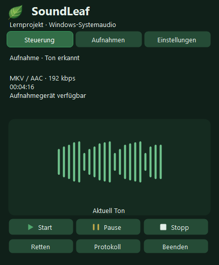
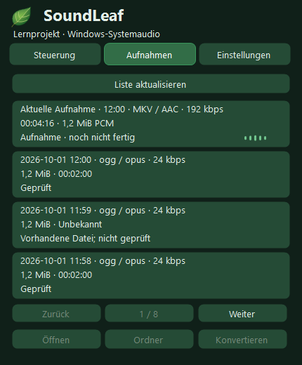

Systemaudio
Audio aus Apps, Browser, Musik und Anrufen aufnehmen, das Windows wiedergibt.
Windows-Systemaudio aufnehmen
lokal, direkt über das Tray-Symbol.
Aufnahme des Windows-Standardausgabegeräts. Aufnahme, Pause und Speichern in einer kompakten Oberfläche. Das Mikrofon wird nicht aufgenommen.


Audio aus Apps, Browser, Musik und Anrufen aufnehmen, das Windows wiedergibt.
Aufnahmen bleiben auf Ihrem Computer. Eine WAV-Sicherung hilft, Audio bei einem Kodierungsfehler zu erhalten.
Abgeschlossene Aufnahmen zeigen Format, Größe und bekannte Dauer. Datei oder Ordner lassen sich direkt öffnen.
MKV/AAC, OGG/Opus, MP3, M4A/AAC, AAC/ADTS und ein ausdrücklich gewählter WAV-Modus.


Die Bibliothek lädt im Hintergrund und zeigt neue Aufnahmen zuerst. Abgeschlossene Dateien zeigen Größe, Format und verfügbare Angaben zur Dauer.
Unterstützte SoundLeaf-Formate. Format und Zielordner lassen sich nur bei gestoppter Aufnahme ändern.
Nach dem Stoppen prüft SoundLeaf das Ergebnis, bevor es als fertig gilt.
Während der Aufnahme wird eine PCM/WAV-Sicherung geführt. Die endgültige Datei wird erst nach Kodierung, vollständiger Dekodierungsprüfung und Dauerprüfung bereitgestellt.
SoundLeaf erkennt unvollständige Sitzungen und stellt sie aus geprüften WAV-Teilen wieder her. Originale werden erst nach erfolgreicher Wiederherstellung archiviert.
Offline-Setup ohne Administratorrechte. FFmpeg ist enthalten. Die Anwendung ist nicht signiert.
Ein Lernprojekt für Windows 11 x64. Die Installation startet keine Aufnahme. Beim Start der App beginnt die Aufnahme automatisch nach den Prüfungen. Beachten Sie Rechte an Inhalten und erforderliche Zustimmungen der Beteiligten.